The battery energy storage systems (BESS) sector has undergone a dramatic transformation from a speculative technology to a critical infrastructure component. As renewable energy deployment accelerates globally, BESS has become the linchpin connecting intermittent generation to reliable power supply—and institutional capital is flooding in to capitalize on this structural shift.
Market Scale and Investment Momentum
The global BESS market exhibits exceptional growth dynamics. Total investment in battery storage reached $40 billion in 2023, a 300% increase from 2021, reflecting the sector's maturation and widening investment appeal. The market is projected to expand from $50.8 billion in 2025 to $105.9 billion by 2030 at a 15.8% compound annual growth rate, though some forecasts suggest the upper bound could reach $150 billion under optimistic deployment scenarios.
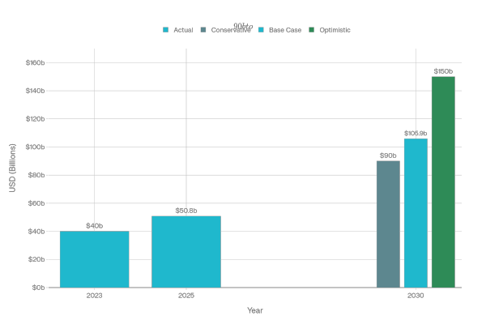
This growth trajectory reflects a fundamental economic shift: declining battery costs coupled with rising renewable energy penetration create profitable arbitrage opportunities without relying exclusively on government subsidies. From 2022 to 2024, BESS capital expenditures fell approximately 30% in major markets due to manufacturing process improvements, enabling projects to maintain healthy returns even as merchant revenue streams compress.
India's Emerging Market Leadership
India represents one of the most significant growth opportunities, with a distinctly policy-driven development model. The market is valued at $306.3 million (2024) and is projected to reach $1,237.3 million by 2030, expanding at a 26.2% compound annual growth rate—substantially faster than the global average.
The Indian government has deployed targeted financing mechanisms to bridge the investment gap. The Viability Gap Funding (VGF) scheme, launched in September 2023, initially allocated ₹9,400 crores ($1.07 billion equivalent) to support 4 GWh of capacity. This program achieved remarkable efficiency: as battery costs declined, the same budgetary allocation was expanded to cover 13.2 GWh, demonstrating how technological improvements can accelerate deployment without proportional subsidy increases.
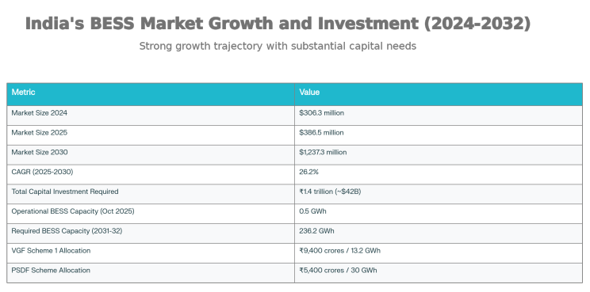
A second major initiative, the Power System Development Fund (PSDF), launched in June 2025, allocated ₹5,400 crores ($631 million) to support 30 GWh of capacity at a subsidized rate of ₹18 lakhs per MWh, with proceeds distributed across 15 states and central PSUs. This two-tranche approach totaling ₹14,800 crores ($1.7 billion equivalent) for 43.2 GWh demonstrates India's recognition that public capital can catalyze the initial phase of a market that will eventually attract substantial private investment.
However, the scale of the opportunity far exceeds current government allocations. India requires 236.2 GWh of BESS capacity by 2031-32 to meet renewable integration targets, necessitating approximately ₹1.4 trillion ($42 billion equivalent) in total investment. As of October 2025, operational BESS capacity stands at only 0.5 GWh, indicating that the tender pipeline and project execution will determine whether India can close this 400-fold gap.
Capital Flows: Investor Composition and Deal Dynamics
Between Q1 2020 and Q2 2024, the BESS sector attracted $15 billion across 250 transactions, averaging $58 million per deal. This composition reveals a market at a critical inflection point: no single investor class dominates, indicating healthy competitive tension and multiple capital pathways.
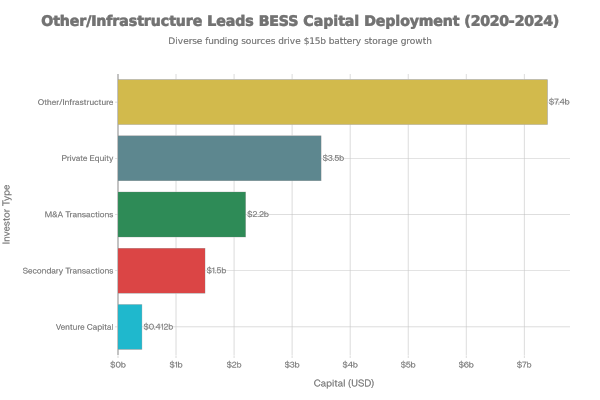
Private equity led capital deployment with $3.5 billion across 59 transactions, reflecting the sector's transition to scale and operational complexity. Venture capital deployed $412 million across 72 transactions, indicating continued innovation in battery chemistry, energy management systems (EMS), and operational software. The concentration of venture capital on enabling technology rather than infrastructure assets reflects the BESS sector's greater reliance on optimization and digital control compared to renewable generation.
Mergers and acquisitions accounted for $2.2 billion across 115 transactions with an average deal size under $20 million, demonstrating robust secondary market activity and acquisition appetite among larger players seeking to rapidly consolidate capacity. Secondary transactions generated $1.5 billion, indicating strong exit opportunities for early-stage shareholders—a signal of market maturity and institutional confidence.
Geographically, US-based investors deployed 40% of total capital ($5.7 billion) across 31% of transactions, driven by the Inflation Reduction Act's 30% investment tax credit for standalone storage projects. European investors contributed $4.6 billion across 78 transactions, averaging $59 million per deal, with particular concentration in the UK and Germany where grid-scale deployment commenced earlier.
Landmark Financing Transactions and Emerging Structures
The sector has achieved several structural breakthroughs that signal deepening lender confidence. Zenobē secured £235 million ($286 million equivalent) in non-recourse project finance in May 2025 for 400 MW / 800 MWh of battery storage in Scotland—the largest project finance facility for BESS projects ever arranged in Europe. This transaction demonstrated that lenders will finance battery projects at meaningful scale with conventional project finance structures once revenue risk is adequately mitigated.
Plus Power executed two transformational transactions: a $1.8 billion project financing in October 2023, followed by a leveraged buyout for $1.5 billion in January 2024 led by OMERS Private Equity, establishing BESS developers as attractive acquisition targets. These deals signaled to the broader investment community that BESS assets could support institutional-grade leverage and deliver multi-digit returns.
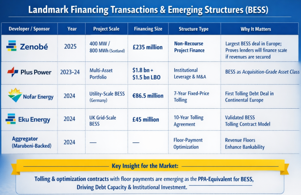
Landmark tolling-backed financings emerged as the critical mechanism unlocking debt capacity. Nofar Energy deal with an undisclosed German energy corporation featured a 7-year fixed-price flexibility contract that enabled €86.5 million in long-term debt—the first such structure in continental Europe. Eku Energy secured £45 million on the back of a 10-year tolling agreement with a Marubeni-backed aggregator in the UK. These transactions established that optimization contracts with floor payments function as the BESS equivalent to power purchase agreements (PPAs) for renewable generation, dramatically improving project bankability.
The Capital Stack Challenge: Leverage Constraints
Unlike mature renewable energy, BESS projects operate under a structural leverage disadvantage. Solar and wind projects typically achieve 80-85% debt financing backed by single PPAs with fixed energy prices. BESS projects, conversely, derive revenue from fragmented sources: wholesale energy arbitrage, balancing services, frequency response, and capacity payments.
Current market practice achieves 40-60% leverage for BESS projects, well below the renewable energy benchmark. This leverage constraint reflects genuine revenue risk: approximately 33% of standalone BESS projects operate as merchants with no contracted revenues, while an additional 16% maintain only partial contracts. Lenders remain hesitant to underwrite merchant risk at the scale renewable developers achieved, reflecting the nascent state of BESS market development.
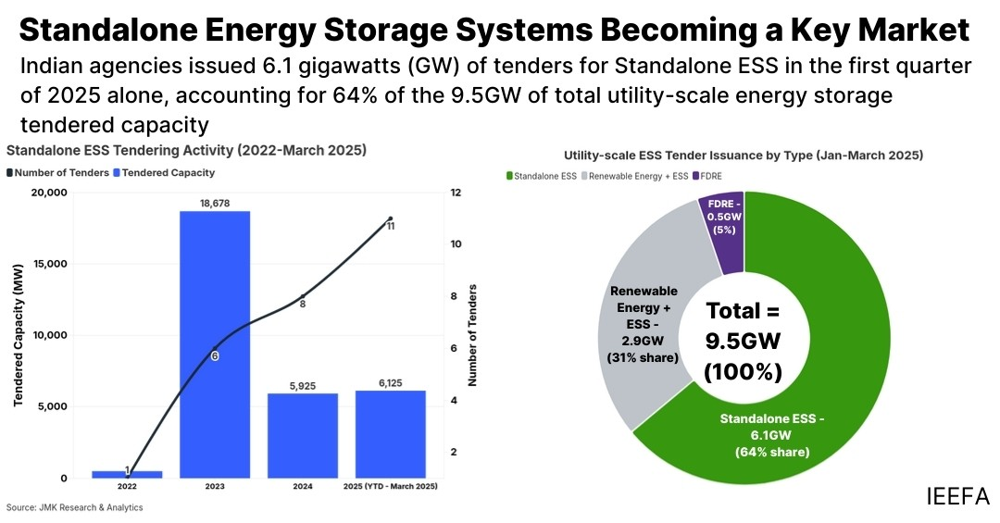
The solution driving the sector forward is revenue stacking—combining multiple income streams to establish sufficient cashflow predictability for debt financing. Projects increasingly combine:
- Capacity contracts (UK, Italy) providing 1–15-year fixed capacity payments
- Tolling agreements (Germany, UK) creating fixed payments for battery services
- Energy arbitrage with hedging floors guaranteeing minimum revenue
- Ancillary services (frequency response, inertia provision) with standardized pricing
- Tax credits (US Inflation Reduction Act) reducing effective capital costs
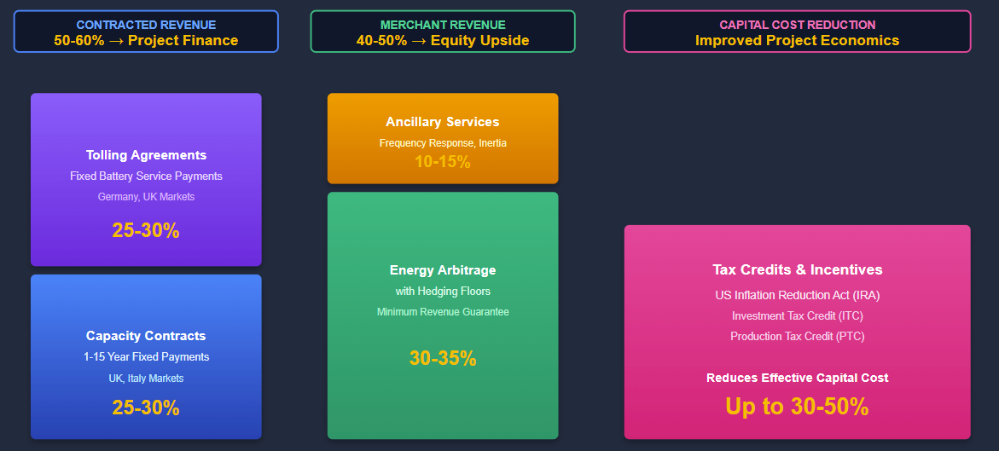
A typical 2025 transaction combines a 50-60% contracted capacity/tolling revenue base (enabling conventional project finance debt) with 40-50% merchant arbitrage revenue allocated to equity holders, aligning developer and lender interests.
Tax Equity and Alternative Capital Structures
The US tax credit landscape has created differentiated financing pathways. Solar-plus-storage hybrids benefit from robust tax equity participation (64% tax equity, 28% direct tax credit transfer, 8% preferred equity), as contracted solar revenues provide lender comfort despite storage revenue volatility. Standalone BESS projects, lacking comparable contracted baselines, see more direct credit transfers to monetize the 30% ITC, though this forgoes the basis step-up achievable in traditional tax equity partnerships—reducing total credit monetization by roughly 25%.
This structuring dynamic has created incentives for hybrid solar-plus-storage development, as developers optimize tax credit realization while reducing overall cost of capital. Over the long term, as BESS tax credits remain durable while solar credits phase down, independent BESS project economics may improve sufficiently to attract tax equity investors with greater comfort around merchant revenue risk.
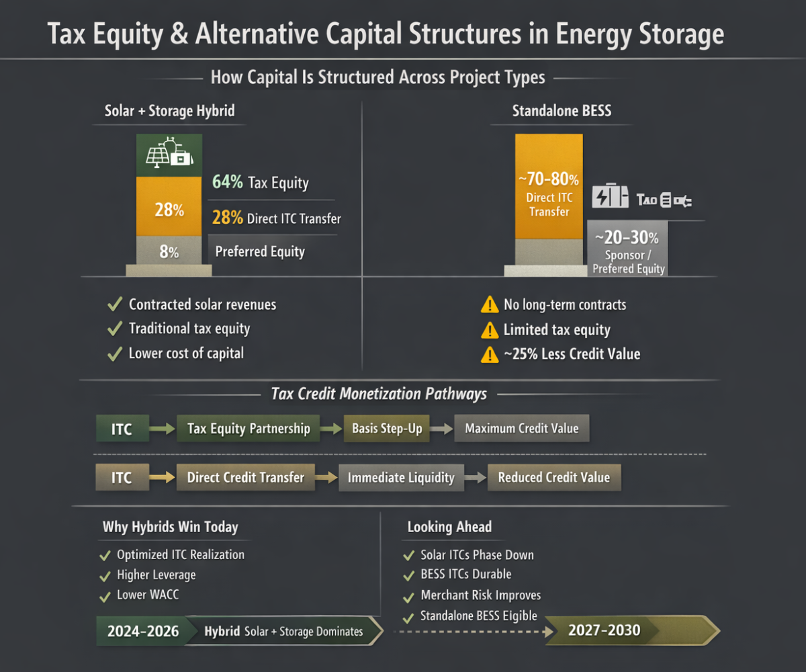
Institutional Investor Appetite
Institutional capital—pension funds, insurance companies, and long-duration asset managers—has emerged as a critical constituency. Canada Pension Plan Investments established Renewable Power Capital as a dedicated platform for energy storage investment. Generali's Sosteneo Energy Transition Fund acquired two utility-scale BESS assets from renewables developer Pacific Green, signaling that insurance companies view storage as a stable, inflation-protected asset class. KKR's $750 million investment in UK storage developer Zenobē reflected private equity's confidence in BESS developer economics and operational upside.
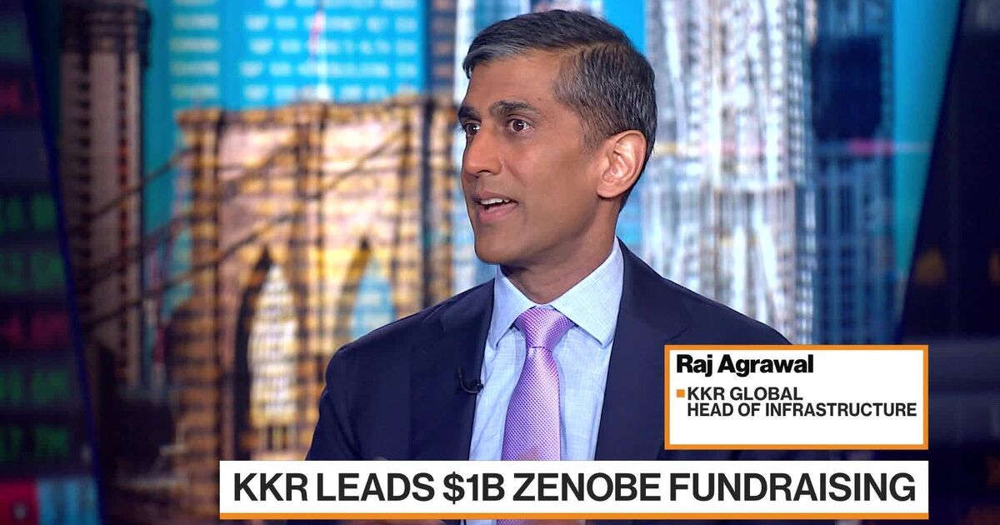
APG, the Dutch pension fund manager, deployed €300 million ($350 million) into Return Energy's growth capital round in October 2025, advancing an 80 MW/240 MWh portfolio across Europe. This transaction exemplifies the shift toward portfolio-level financing rather than project-by-project capital deployment—institutional investors increasingly structure deals to finance 200+ MW pipelines rather than individual 50 MW assets, reducing transaction costs and enabling standardized credit analysis.
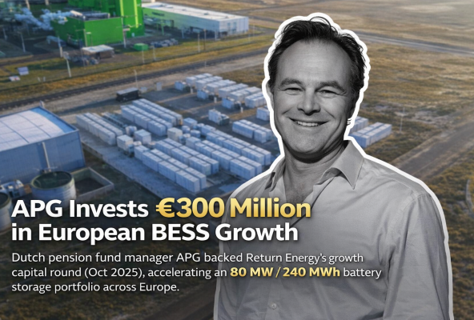
Venture capital has focused upstream, with $9.2 billion deployed across 86 deals in 2023 (+59% year-over-year), accelerating into 2025 with $17.86 billion globally through August—surpassing the entire 2023 total. This capital focuses on enabling technologies: advanced battery chemistries (flow batteries, sodium-ion, iron-air), energy management systems, artificial intelligence-driven optimization, and integration platforms that maximize revenue stacking efficiency.
Development Finance Institutions and Emerging Market Support
Multilateral development banks (MDBs) and development finance institutions (DFIs) have become critical catalysts for BESS deployment in emerging markets where capital costs remain elevated. The Global Energy Alliance for People and Planet (GEAPP) provided concessional financing for India's first commercial standalone BESS project operated by BRPL (Delhi), covering 70% of project costs and demonstrating how risk mitigation from development finance can unlock private capital.
Commitments from MDBs for climate finance reached record levels at COP29 in Baku. By 2030, MDBs pledged $120 billion annually in collective climate financing for low- and middle-income countries, with additional mobilization targets of $65 billion annually from the private sector. While BESS represents only a portion of this climate finance envelope, the unprecedented capital commitment and emphasis on emerging market support creates a foundational financing environment for storage deployment in regions like India, Southeast Asia, and Latin America.
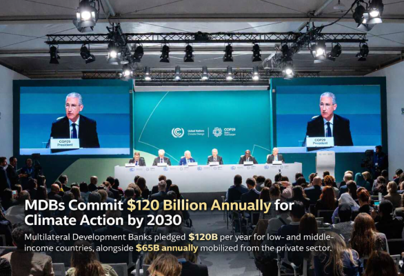
World Bank structures for supporting BESS in emerging markets illustrate the risk mitigation approach: guarantee mechanisms reduce country risk perception, enabling private lenders to participate in projects they would otherwise avoid. This "credit enhancement" model—combining MDB guarantees or concessional interest-rate buydowns with conventional commercial financing—has proven effective in attracting anchor institutional investors who require explicit risk reduction to justify allocation.
Government Support and Policy Incentives
Beyond traditional financing, governments are deploying sophisticated incentive mechanisms. India's mandate requiring 20% domestic content in VGF-supported BESS projects, issued in January 2026, creates procurement advantages for domestic manufacturers and systems integrators while maintaining competitive bidding. This policy acknowledges that BESS financing cannot be decoupled from manufacturing ecosystem development; concessional capital flows most efficiently to projects incorporating domestically produced components.
The US Inflation Reduction Act's 30% investment tax credit for standalone storage, coupled with Domestic Content Bonus Adders, creates effective incentive rates exceeding 40% for projects utilizing qualified domestic content. This credit structure de-risks merchant projects by reducing capital requirements, enabling lower tariff bids and improving competitive positioning—a mechanism particularly powerful when combined with depreciation benefits and potential production tax credits.
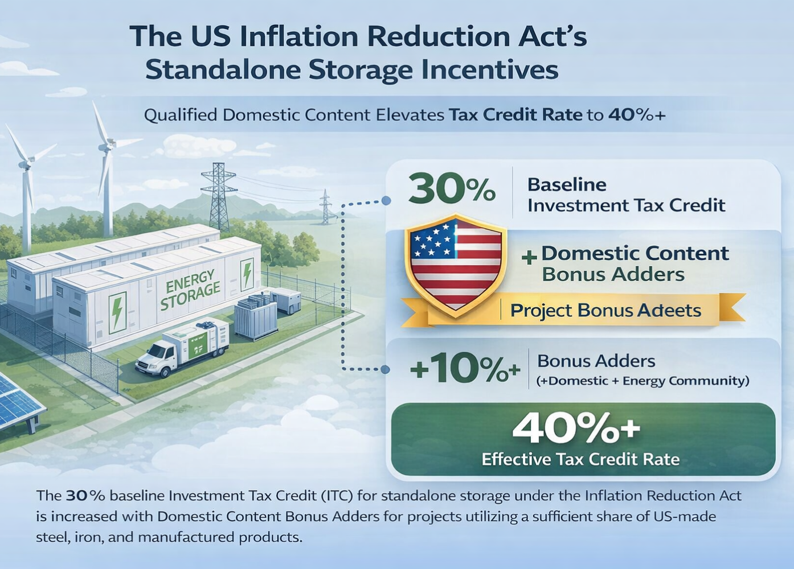
Germany's removal of punitive network charges for distributed storage (treating battery assets neither as pure generators nor final demand, but as grid infrastructure) triggered rapid market expansion, demonstrating how regulatory risk allocation can constrain or catalyze capital deployment. Projects in Germany's supportive regulatory environment achieved lower financing costs, validating the principle that stable regulatory frameworks enable capital cost optimization.
Capital Stack Evolution: From Balance Sheet to Project Finance
The sector has transitioned from corporate balance sheet financing to institutional project finance structures. A few years ago, BESS financing relied primarily on developer equity or subsidies; today, non-recourse project finance structures finance 600+ MW portfolios, mezzanine debt layers the capital stack, and public development banks co-finance with private lenders.
This structural evolution reflects three drivers: (1) standardization of BESS technology and operational performance, reducing development risk; (2) evidence of sustainable cash generation through multiple operating cycles, allowing debt underwriting on historical performance; and (3) portfolio-level financing reducing per-project transaction costs and enabling equity returns attractive enough to justify development risk.
The typical 2025 capital stack for a contractually-supported BESS project structures leverage as follows:
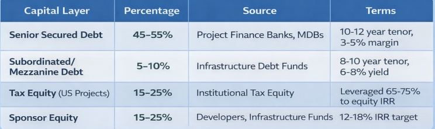
Projects with minimal contracted revenues remain reliant on equity financing or hybrid structures combining corporate debt with tax credits, explaining why merchant merchant BESS projects face significantly higher capital costs.
India-Specific Financing Landscape and Future Capital Requirements
India's BESS financing landscape differs markedly from mature markets, reflecting nascent market development and heavy government involvement. Government support through VGF and PSDF schemes functions as demand catalyst, reducing tariff certainty risk for private developers and improving project economics sufficiently to attract domestic and international financial institutions.
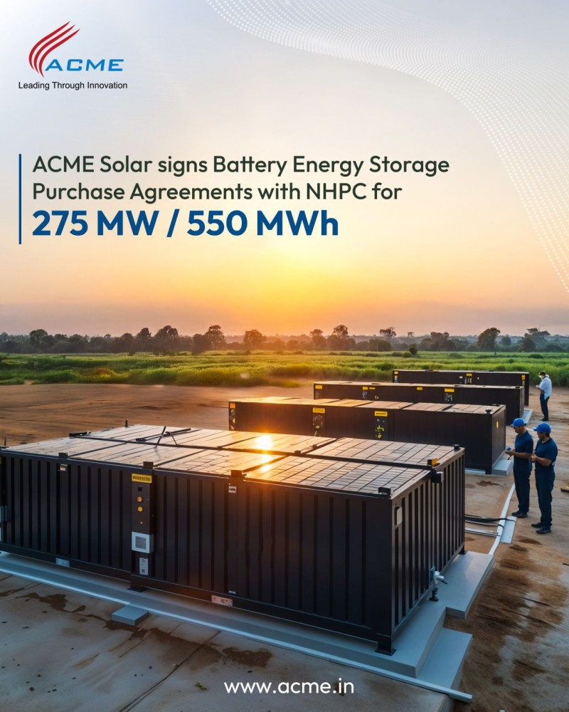
Recent tender awards illustrate emerging financing patterns. ACME Solar Holdings signed Battery Energy Storage Purchase Agreements (BESPA) with NHPC for 275 MW/550 MWh across two standalone projects in Andhra Pradesh, secured through reverse auction at ₹210,000-222,000 per MW per month. These tariffs demonstrate rapid cost curve improvement as manufacturing scale increases and competitive intensity drives efficiency.
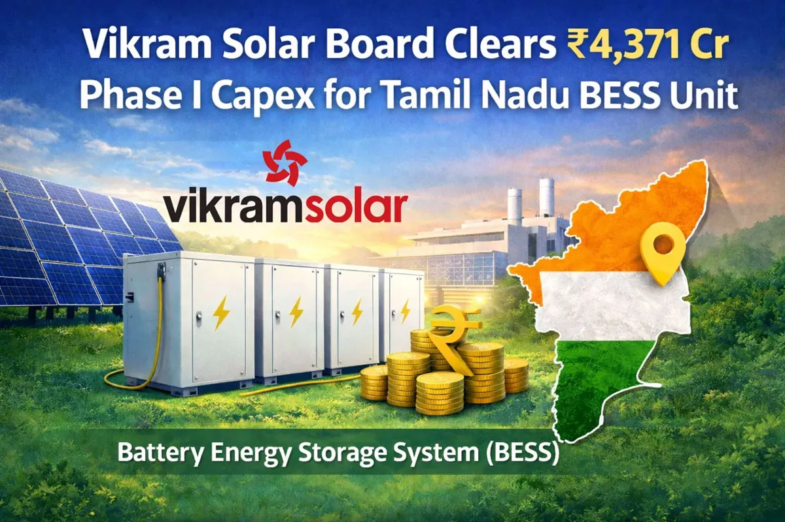
Private sector participation is accelerating. Vikram Solar approved ₹43.7 billion capex for Phase 1 BESS manufacturing through subsidiary VSL Powerhive, with long-term roadmap targeting 30 GWh capacity through phased development funded via debt and equity combinations. TATA Power commissioned India's largest solar-plus-storage hybrid (100 MW solar + 120 MWh BESS), with subsequent BESS acquisition from NHPC, signaling major industrial groups' confidence in standalone storage economics.
However, the scale mismatch remains acute. Against required deployment of 236.2 GWh by 2031-32 and estimated capital requirements of ₹1.4 trillion, public sector allocations total ₹14,800 crores—providing only 10% of required funding. The remaining 90% must derive from private institutional capital. This creates both opportunity and risk: capital inflows could accelerate dramatically if project execution proves successful and return profiles meet institutional investor expectations or remain constrained if execution challenges or tariff compression reduce returns below hurdle rates.
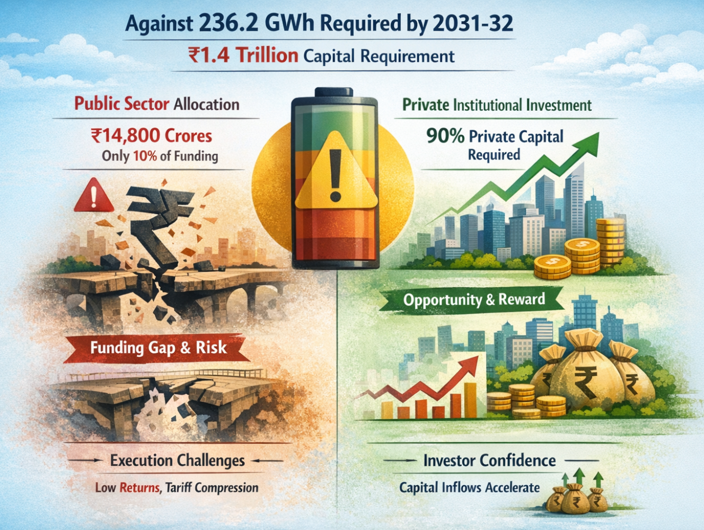
Forward Capital Flow Trajectories
Global BESS capital flows will likely accelerate as three factors converge: (1) standardized project finance documentation and credit analysis methodologies reducing underwriting friction; (2) demonstration of sustainable operating performance and revenue stability at scale; and (3) continued battery cost declines enabling BESS economics to compete with generation assets in marginal grid locations.
Emerging markets will see deepening MDB and DFI participation, with explicit risk mitigation (guarantees, concessional interest-rate buydowns, currency protection) enabling private capital participation. India's experience suggests that government capital efficiently catalyzes private investment when structured through:
- Viability gap funding reducing tariff risk and establishing project performance track records
- Development bank guarantees enabling commercial lenders to participate
- Domestic content requirements aligning incentive capital with manufacturing ecosystem development
- Tax and duty relief reducing equipment procurement costs (India's recent customs duty waiver on battery minerals exemplifies this approach)
The next five years will likely determine whether BESS achieves sustained 15%+ annual capital flow growth through the 2030s. Success requires closing three gaps: (1) financing revenue-stable projects at 65-70% leverage comparable to renewables, (2) standardizing project finance documentation to reduce capital deployment friction, and (3) demonstrating that BESS returns stabilize at levels sufficient for long-duration institutional capital (pension funds, insurance, infrastructure debt) to allocate meaningful capital at scale.
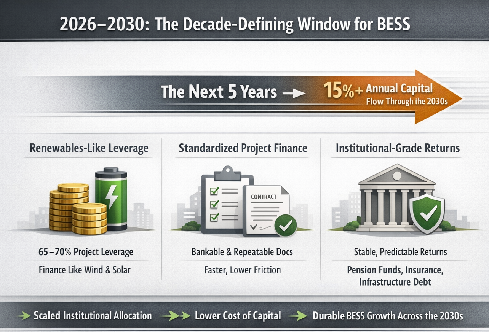
Evidence to date—record institutional investor appetite, $17.86 billion venture and private equity capital through August 2025, and emerging portfolio-level financing structures—suggests the sector is approaching inflection. The question is no longer whether BESS attracts capital, but whether capital supply will outpace deployment demand, creating the structural oversupply that historically precedes consolidation and maturation in infrastructure sectors.